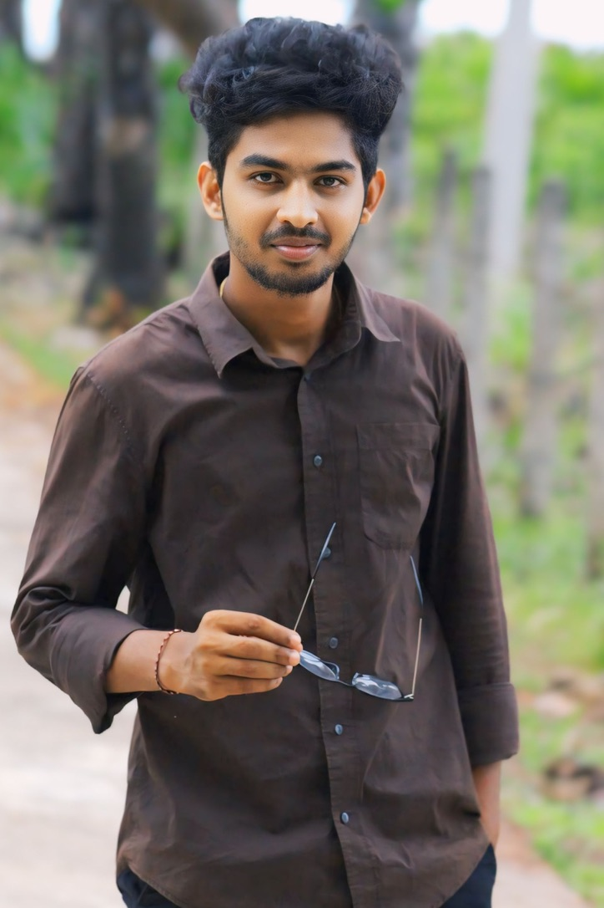

As a dedicated Software Engineering student at Sabaragamuwa University of Sri Lanka, I'm currently in my 2nd year of BSc. Hons studies, building a strong foundation in modern software development practices and technologies.
My expertise lies in the Java technology stack, where I've developed proficiency in creating robust, scalable applications. I'm passionate about writing clean, efficient code and believe in the power of well-architected solutions to solve complex business problems.
Beyond coding, I'm committed to community service and precision in all my endeavors. My experience as a volunteer teacher and data collector for government projects has taught me the importance of attention to detail, patience, and clear communication – skills that directly translate to better software development.
2nd Year BSc. Hons in Software Engineering at Sabaragamuwa University of Sri Lanka
Volunteer teacher, sharing knowledge and helping others grow
ata collector for government office, ensuring accuracy and reliability
Comprehensive technical skills across the full development stack, with a focus on Java technologies and modern web development.